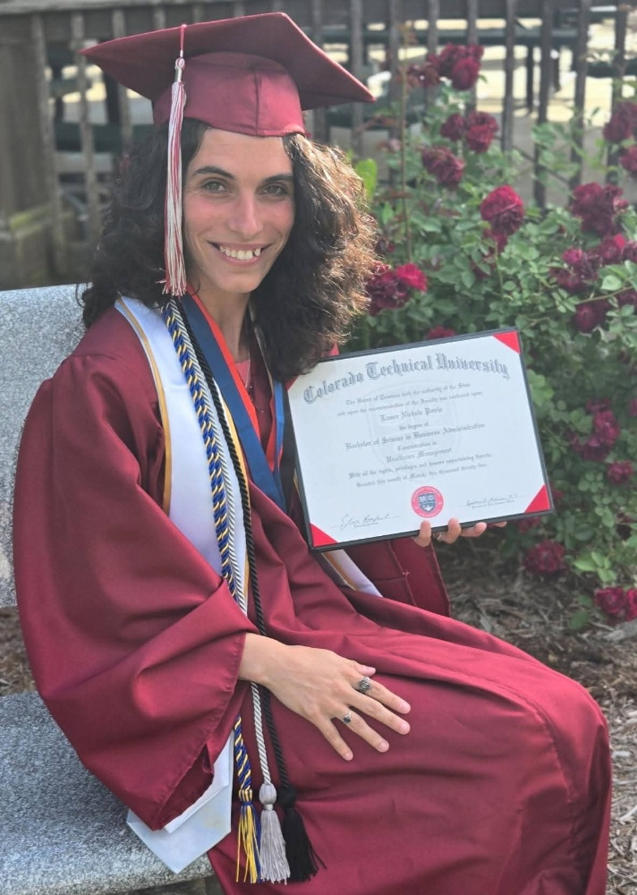
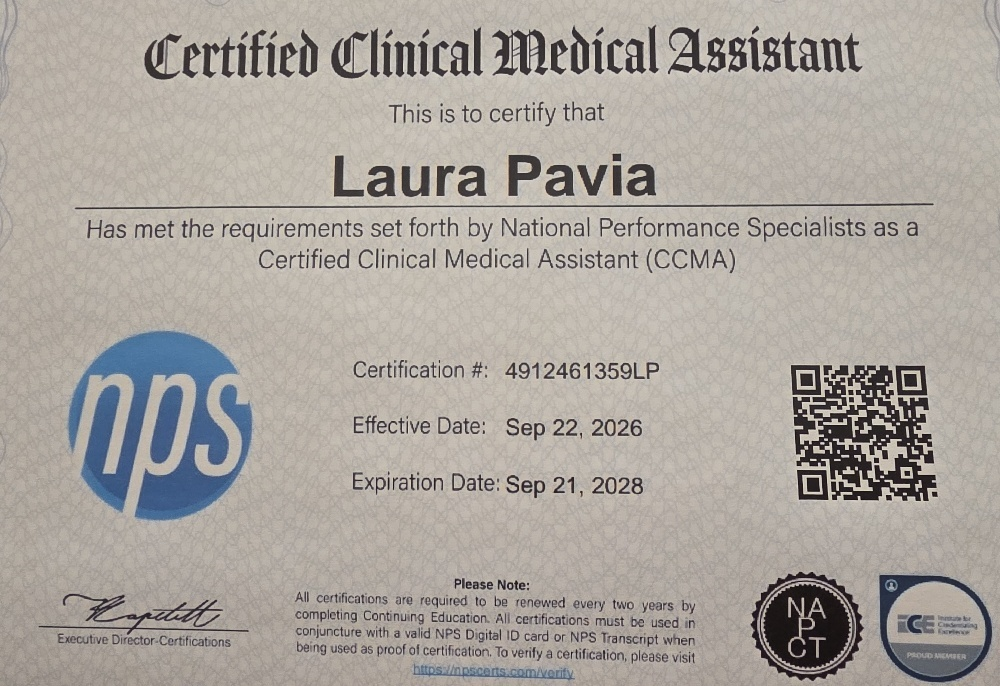
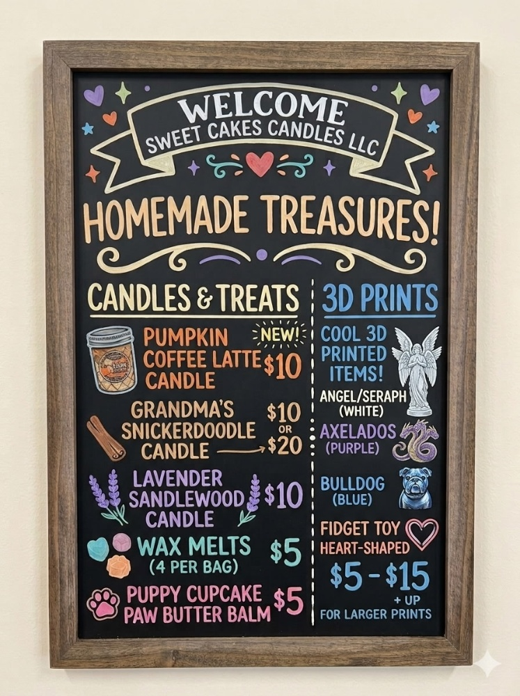

Academic Foundation
Bachelor of Science
Earned her Bachelor of Science in Business Administration with a Concentration in Healthcare Management from Colorado Technical University.
Healthcare Professional, Master’s Candidate, and Founder of Sweet Cakes Candles LLC.
Learn More About Laura
Earned her Bachelor of Science in Business Administration with a Concentration in Healthcare Management from Colorado Technical University.

Certified Clinical Medical Assistant through National Performance Specialists, demonstrating clinical expertise and commitment to patient care.

Founder and operator of a craft business producing hand-poured soy wax candles, specialty wax melts, and natural pet care products.